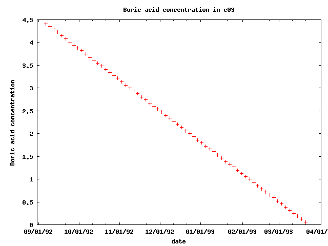
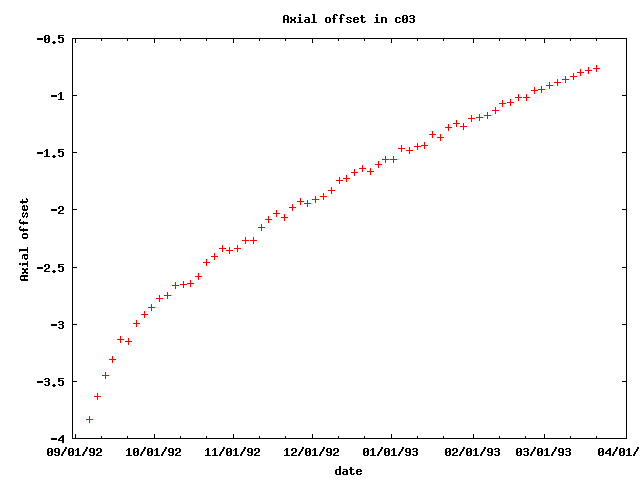
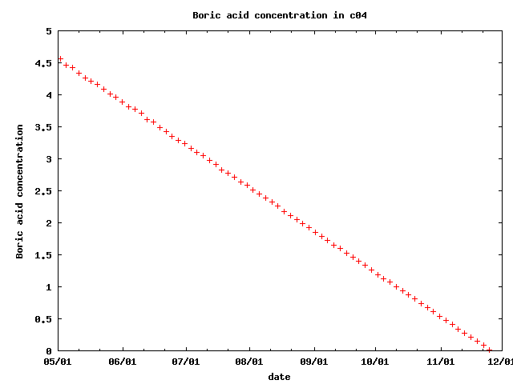
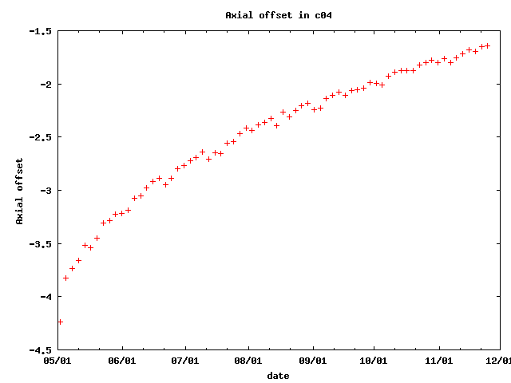
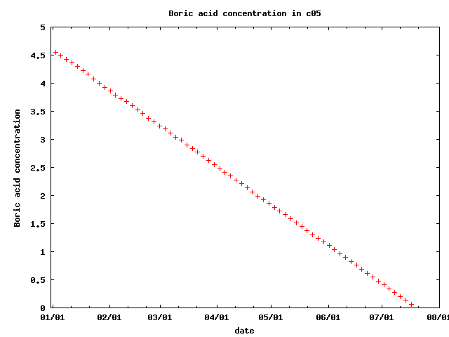
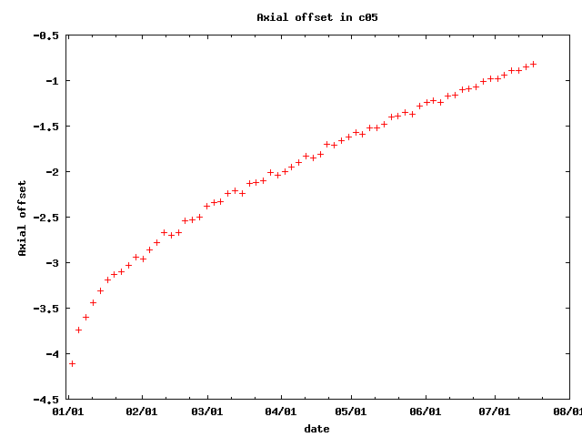

Provozní záznamy JE Třeskoprsky
Tento dokument obsahuje provozní záznamy z jaderné elektrárny Třeskoprsky.
Kampaň c01
Koncentrace kyseliny borité
tabulka / graf
| 04. 05. 1991 | 4.741 |
09. 07. 1991 | 3.134 |
13. 09. 1991 | 1.540 |
| 07. 05. 1991 | 4.637 |
12. 07. 1991 | 3.073 |
16. 09. 1991 | 1.475 |
| 10. 05. 1991 | 4.571 |
15. 07. 1991 | 2.989 |
19. 09. 1991 | 1.405 |
| 13. 05. 1991 | 4.529 |
18. 07. 1991 | 2.923 |
22. 09. 1991 | 1.328 |
| 16. 05. 1991 | 4.431 |
21. 07. 1991 | 2.856 |
25. 09. 1991 | 1.263 |
| 19. 05. 1991 | 4.367 |
24. 07. 1991 | 2.770 |
28. 09. 1991 | 1.182 |
| 22. 05. 1991 | 4.276 |
27. 07. 1991 | 2.708 |
01. 10. 1991 | 1.113 |
| 25. 05. 1991 | 4.212 |
30. 07. 1991 | 2.641 |
04. 10. 1991 | 1.040 |
| 28. 05. 1991 | 4.165 |
02. 08. 1991 | 2.550 |
07. 10. 1991 | 0.968 |
| 31. 05. 1991 | 4.080 |
05. 08. 1991 | 2.479 |
10. 10. 1991 | 0.902 |
| 03. 06. 1991 | 4.009 |
08. 08. 1991 | 2.412 |
13. 10. 1991 | 0.827 |
| 06. 06. 1991 | 3.942 |
11. 08. 1991 | 2.346 |
16. 10. 1991 | 0.754 |
| 09. 06. 1991 | 3.877 |
14. 08. 1991 | 2.261 |
19. 10. 1991 | 0.683 |
| 12. 06. 1991 | 3.779 |
17. 08. 1991 | 2.202 |
22. 10. 1991 | 0.610 |
| 15. 06. 1991 | 3.701 |
20. 08. 1991 | 2.131 |
25. 10. 1991 | 0.538 |
| 18. 06. 1991 | 3.651 |
23. 08. 1991 | 2.051 |
28. 10. 1991 | 0.463 |
| 21. 06. 1991 | 3.556 |
26. 08. 1991 | 1.983 |
31. 10. 1991 | 0.393 |
| 24. 06. 1991 | 3.514 |
29. 08. 1991 | 1.914 |
03. 11. 1991 | 0.319 |
| 27. 06. 1991 | 3.438 |
01. 09. 1991 | 1.842 |
06. 11. 1991 | 0.249 |
| 30. 06. 1991 | 3.365 |
04. 09. 1991 | 1.773 |
09. 11. 1991 | 0.175 |
| 03. 07. 1991 | 3.272 |
07. 09. 1991 | 1.700 |
12. 11. 1991 | 0.104 |
| 06. 07. 1991 | 3.203 |
10. 09. 1991 | 1.623 |
15. 11. 1991 | 0.032 |

Axiální ofset
krokodyl
| 04. 05. 1991 | -4.158 |
09. 07. 1991 | -2.528 |
13. 09. 1991 | -1.959 |
| 07. 05. 1991 | -3.747 |
12. 07. 1991 | -2.520 |
16. 09. 1991 | -1.904 |
| 10. 05. 1991 | -3.622 |
15. 07. 1991 | -2.459 |
19. 09. 1991 | -1.850 |
| 13. 05. 1991 | -3.486 |
18. 07. 1991 | -2.423 |
22. 09. 1991 | -1.879 |
| 16. 05. 1991 | -3.551 |
21. 07. 1991 | -2.500 |
25. 09. 1991 | -1.801 |
| 19. 05. 1991 | -3.439 |
24. 07. 1991 | -2.372 |
28. 09. 1991 | -1.807 |
| 22. 05. 1991 | -3.297 |
27. 07. 1991 | -2.335 |
01. 10. 1991 | -1.792 |
| 25. 05. 1991 | -3.290 |
30. 07. 1991 | -2.370 |
04. 10. 1991 | -1.742 |
| 28. 05. 1991 | -3.174 |
02. 08. 1991 | -2.306 |
07. 10. 1991 | -1.769 |
| 31. 05. 1991 | -3.109 |
05. 08. 1991 | -2.252 |
10. 10. 1991 | -1.731 |
| 03. 06. 1991 | -3.075 |
08. 08. 1991 | -2.279 |
13. 10. 1991 | -1.674 |
| 06. 06. 1991 | -3.039 |
11. 08. 1991 | -2.218 |
16. 10. 1991 | -1.647 |
| 09. 06. 1991 | -3.020 |
14. 08. 1991 | -2.187 |
19. 10. 1991 | -1.643 |
| 12. 06. 1991 | -2.986 |
17. 08. 1991 | -2.219 |
22. 10. 1991 | -1.650 |
| 15. 06. 1991 | -2.897 |
20. 08. 1991 | -2.182 |
25. 10. 1991 | -1.622 |
| 18. 06. 1991 | -2.826 |
23. 08. 1991 | -2.158 |
28. 10. 1991 | -1.617 |
| 21. 06. 1991 | -2.791 |
26. 08. 1991 | -2.098 |
31. 10. 1991 | -1.566 |
| 24. 06. 1991 | -2.807 |
29. 08. 1991 | -2.083 |
03. 11. 1991 | -1.536 |
| 27. 06. 1991 | -2.661 |
01. 09. 1991 | -2.020 |
06. 11. 1991 | -1.543 |
| 30. 06. 1991 | -2.651 |
04. 09. 1991 | -2.047 |
09. 11. 1991 | -1.528 |
| 03. 07. 1991 | -2.625 |
07. 09. 1991 | -2.026 |
12. 11. 1991 | -1.467 |
| 06. 07. 1991 | -2.591 |
10. 09. 1991 | -1.967 |
15. 11. 1991 | -1.482 |
Kampaň c02
Koncentrace kyseliny borité
tabulka / graf
| 25. 12. 1991 | 4.264 |
09. 03. 1992 | 2.850 |
23. 05. 1992 | 1.419 |
| 28. 12. 1991 | 4.208 |
12. 03. 1992 | 2.779 |
26. 05. 1992 | 1.358 |
| 31. 12. 1991 | 4.165 |
15. 03. 1992 | 2.734 |
29. 05. 1992 | 1.296 |
| 03. 01. 1992 | 4.128 |
18. 03. 1992 | 2.681 |
01. 06. 1992 | 1.239 |
| 06. 01. 1992 | 4.033 |
21. 03. 1992 | 2.619 |
04. 06. 1992 | 1.193 |
| 09. 01. 1992 | 3.992 |
24. 03. 1992 | 2.568 |
07. 06. 1992 | 1.136 |
| 12. 01. 1992 | 3.935 |
27. 03. 1992 | 2.496 |
10. 06. 1992 | 1.069 |
| 15. 01. 1992 | 3.872 |
30. 03. 1992 | 2.455 |
13. 06. 1992 | 1.015 |
| 18. 01. 1992 | 3.821 |
02. 04. 1992 | 2.381 |
16. 06. 1992 | 0.955 |
| 21. 01. 1992 | 3.786 |
05. 04. 1992 | 2.336 |
19. 06. 1992 | 0.902 |
| 24. 01. 1992 | 3.703 |
08. 04. 1992 | 2.286 |
22. 06. 1992 | 0.843 |
| 27. 01. 1992 | 3.645 |
11. 04. 1992 | 2.227 |
25. 06. 1992 | 0.787 |
| 30. 01. 1992 | 3.605 |
14. 04. 1992 | 2.153 |
28. 06. 1992 | 0.731 |
| 02. 02. 1992 | 3.552 |
17. 04. 1992 | 2.114 |
01. 07. 1992 | 0.670 |
| 05. 02. 1992 | 3.476 |
20. 04. 1992 | 2.051 |
04. 07. 1992 | 0.612 |
| 08. 02. 1992 | 3.432 |
23. 04. 1992 | 1.998 |
07. 07. 1992 | 0.555 |
| 11. 02. 1992 | 3.367 |
26. 04. 1992 | 1.930 |
10. 07. 1992 | 0.499 |
| 14. 02. 1992 | 3.292 |
29. 04. 1992 | 1.879 |
13. 07. 1992 | 0.441 |
| 17. 02. 1992 | 3.247 |
02. 05. 1992 | 1.814 |
16. 07. 1992 | 0.385 |
| 20. 02. 1992 | 3.185 |
05. 05. 1992 | 1.766 |
19. 07. 1992 | 0.327 |
| 23. 02. 1992 | 3.128 |
08. 05. 1992 | 1.702 |
22. 07. 1992 | 0.271 |
| 26. 02. 1992 | 3.074 |
11. 05. 1992 | 1.652 |
25. 07. 1992 | 0.213 |
| 29. 02. 1992 | 3.035 |
14. 05. 1992 | 1.594 |
28. 07. 1992 | 0.157 |
| 03. 03. 1992 | 2.973 |
17. 05. 1992 | 1.538 |
31. 07. 1992 | 0.099 |
| 06. 03. 1992 | 2.898 |
20. 05. 1992 | 1.468 |
03. 08. 1992 | 0.041 |
Axiální ofset
tabulka / graf
| 25. 12. 1991 | -3.798 |
09. 03. 1992 | -1.909 |
23. 05. 1992 | -1.037 |
| 28. 12. 1991 | -3.420 |
12. 03. 1992 | -1.825 |
26. 05. 1992 | -0.995 |
| 31. 12. 1991 | -3.230 |
15. 03. 1992 | -1.856 |
29. 05. 1992 | -0.979 |
| 03. 01. 1992 | -3.145 |
18. 03. 1992 | -1.781 |
01. 06. 1992 | -0.952 |
| 06. 01. 1992 | -3.100 |
21. 03. 1992 | -1.725 |
04. 06. 1992 | -0.928 |
| 09. 01. 1992 | -2.937 |
24. 03. 1992 | -1.727 |
07. 06. 1992 | -0.875 |
| 12. 01. 1992 | -2.869 |
27. 03. 1992 | -1.672 |
10. 06. 1992 | -0.864 |
| 15. 01. 1992 | -2.746 |
30. 03. 1992 | -1.644 |
13. 06. 1992 | -0.838 |
| 18. 01. 1992 | -2.740 |
02. 04. 1992 | -1.573 |
16. 06. 1992 | -0.791 |
| 21. 01. 1992 | -2.717 |
05. 04. 1992 | -1.559 |
19. 06. 1992 | -0.786 |
| 24. 01. 1992 | -2.580 |
08. 04. 1992 | -1.493 |
22. 06. 1992 | -0.766 |
| 27. 01. 1992 | -2.589 |
11. 04. 1992 | -1.464 |
25. 06. 1992 | -0.729 |
| 30. 01. 1992 | -2.503 |
14. 04. 1992 | -1.435 |
28. 06. 1992 | -0.698 |
| 02. 02. 1992 | -2.501 |
17. 04. 1992 | -1.395 |
01. 07. 1992 | -0.682 |
| 05. 02. 1992 | -2.373 |
20. 04. 1992 | -1.420 |
04. 07. 1992 | -0.642 |
| 08. 02. 1992 | -2.333 |
23. 04. 1992 | -1.386 |
07. 07. 1992 | -0.612 |
| 11. 02. 1992 | -2.250 |
26. 04. 1992 | -1.335 |
10. 07. 1992 | -0.582 |
| 14. 02. 1992 | -2.248 |
29. 04. 1992 | -1.266 |
13. 07. 1992 | -0.580 |
| 17. 02. 1992 | -2.173 |
02. 05. 1992 | -1.282 |
16. 07. 1992 | -0.548 |
| 20. 02. 1992 | -2.101 |
05. 05. 1992 | -1.248 |
19. 07. 1992 | -0.500 |
| 23. 02. 1992 | -2.124 |
08. 05. 1992 | -1.214 |
22. 07. 1992 | -0.480 |
| 26. 02. 1992 | -2.108 |
11. 05. 1992 | -1.146 |
25. 07. 1992 | -0.461 |
| 29. 02. 1992 | -2.060 |
14. 05. 1992 | -1.115 |
28. 07. 1992 | -0.433 |
| 03. 03. 1992 | -1.939 |
17. 05. 1992 | -1.088 |
31. 07. 1992 | -0.419 |
| 06. 03. 1992 | -1.918 |
20. 05. 1992 | -1.080 |
03. 08. 1992 | -0.393 |
Kampaň c03
Koncentrace kyseliny borité
tabulka / graf
| 07. 09. 1992 | 4.415 |
12. 11. 1992 | 2.940 |
17. 01. 1993 | 1.460 |
| 10. 09. 1992 | 4.354 |
15. 11. 1992 | 2.881 |
20. 01. 1993 | 1.389 |
| 13. 09. 1992 | 4.295 |
18. 11. 1992 | 2.806 |
23. 01. 1993 | 1.329 |
| 16. 09. 1992 | 4.233 |
21. 11. 1992 | 2.749 |
26. 01. 1993 | 1.266 |
| 19. 09. 1992 | 4.149 |
24. 11. 1992 | 2.659 |
29. 01. 1993 | 1.195 |
| 22. 09. 1992 | 4.079 |
27. 11. 1992 | 2.602 |
01. 02. 1993 | 1.129 |
| 25. 09. 1992 | 3.999 |
30. 11. 1992 | 2.541 |
04. 02. 1993 | 1.054 |
| 28. 09. 1992 | 3.938 |
03. 12. 1992 | 2.479 |
07. 02. 1993 | 0.996 |
| 01. 10. 1992 | 3.879 |
06. 12. 1992 | 2.394 |
10. 02. 1993 | 0.922 |
| 04. 10. 1992 | 3.822 |
09. 12. 1992 | 2.340 |
13. 02. 1993 | 0.860 |
| 07. 10. 1992 | 3.741 |
12. 12. 1992 | 2.262 |
16. 02. 1993 | 0.793 |
| 10. 10. 1992 | 3.663 |
15. 12. 1992 | 2.205 |
19. 02. 1993 | 0.725 |
| 13. 10. 1992 | 3.613 |
18. 12. 1992 | 2.141 |
22. 02. 1993 | 0.655 |
| 16. 10. 1992 | 3.545 |
21. 12. 1992 | 2.063 |
25. 02. 1993 | 0.591 |
| 19. 10. 1992 | 3.485 |
24. 12. 1992 | 1.998 |
28. 02. 1993 | 0.521 |
| 22. 10. 1992 | 3.409 |
27. 12. 1992 | 1.940 |
03. 03. 1993 | 0.456 |
| 25. 10. 1992 | 3.336 |
30. 12. 1992 | 1.858 |
06. 03. 1993 | 0.388 |
| 28. 10. 1992 | 3.273 |
02. 01. 1993 | 1.799 |
09. 03. 1993 | 0.320 |
| 31. 10. 1992 | 3.214 |
05. 01. 1993 | 1.723 |
12. 03. 1993 | 0.253 |
| 03. 11. 1992 | 3.139 |
08. 01. 1993 | 1.663 |
15. 03. 1993 | 0.188 |
| 06. 11. 1992 | 3.058 |
11. 01. 1993 | 1.604 |
18. 03. 1993 | 0.120 |
| 09. 11. 1992 | 3.004 |
14. 01. 1993 | 1.527 |
21. 03. 1993 | 0.053 |

Axiální ofset
tabulka / graf
| 07. 09. 1992 | -3.833 |
12. 11. 1992 | -2.152 |
17. 01. 1993 | -1.344 |
| 10. 09. 1992 | -3.629 |
15. 11. 1992 | -2.086 |
20. 01. 1993 | -1.362 |
| 13. 09. 1992 | -3.448 |
18. 11. 1992 | -2.035 |
23. 01. 1993 | -1.279 |
| 16. 09. 1992 | -3.305 |
21. 11. 1992 | -2.063 |
26. 01. 1993 | -1.248 |
| 19. 09. 1992 | -3.138 |
24. 11. 1992 | -1.976 |
29. 01. 1993 | -1.271 |
| 22. 09. 1992 | -3.152 |
27. 11. 1992 | -1.924 |
01. 02. 1993 | -1.203 |
| 25. 09. 1992 | -2.995 |
30. 11. 1992 | -1.943 |
04. 02. 1993 | -1.191 |
| 28. 09. 1992 | -2.913 |
03. 12. 1992 | -1.908 |
07. 02. 1993 | -1.177 |
| 01. 10. 1992 | -2.858 |
06. 12. 1992 | -1.879 |
10. 02. 1993 | -1.133 |
| 04. 10. 1992 | -2.773 |
09. 12. 1992 | -1.834 |
13. 02. 1993 | -1.066 |
| 07. 10. 1992 | -2.751 |
12. 12. 1992 | -1.744 |
16. 02. 1993 | -1.056 |
| 10. 10. 1992 | -2.664 |
15. 12. 1992 | -1.728 |
19. 02. 1993 | -1.019 |
| 13. 10. 1992 | -2.656 |
18. 12. 1992 | -1.671 |
22. 02. 1993 | -1.018 |
| 16. 10. 1992 | -2.642 |
21. 12. 1992 | -1.634 |
25. 02. 1993 | -0.956 |
| 19. 10. 1992 | -2.585 |
24. 12. 1992 | -1.666 |
28. 02. 1993 | -0.944 |
| 22. 10. 1992 | -2.458 |
27. 12. 1992 | -1.604 |
03. 03. 1993 | -0.914 |
| 25. 10. 1992 | -2.405 |
30. 12. 1992 | -1.559 |
06. 03. 1993 | -0.887 |
| 28. 10. 1992 | -2.336 |
02. 01. 1993 | -1.561 |
09. 03. 1993 | -0.862 |
| 31. 10. 1992 | -2.355 |
05. 01. 1993 | -1.462 |
12. 03. 1993 | -0.830 |
| 03. 11. 1992 | -2.336 |
08. 01. 1993 | -1.477 |
15. 03. 1993 | -0.798 |
| 06. 11. 1992 | -2.271 |
11. 01. 1993 | -1.448 |
18. 03. 1993 | -0.776 |
| 09. 11. 1992 | -2.264 |
14. 01. 1993 | -1.432 |
21. 03. 1993 | -0.761 |

Kampaň c04
Koncentrace kyseliny borité
tabulka / graf
| 02. 05. 1993 | 4.566 |
10. 07. 1993 | 3.047 |
17. 09. 1993 | 1.521 |
| 05. 05. 1993 | 4.465 |
13. 07. 1993 | 2.972 |
20. 09. 1993 | 1.458 |
| 08. 05. 1993 | 4.423 |
16. 07. 1993 | 2.908 |
23. 09. 1993 | 1.397 |
| 11. 05. 1993 | 4.332 |
19. 07. 1993 | 2.829 |
26. 09. 1993 | 1.334 |
| 14. 05. 1993 | 4.266 |
22. 07. 1993 | 2.774 |
29. 09. 1993 | 1.266 |
| 17. 05. 1993 | 4.207 |
25. 07. 1993 | 2.717 |
02. 10. 1993 | 1.193 |
| 20. 05. 1993 | 4.166 |
28. 07. 1993 | 2.641 |
05. 10. 1993 | 1.130 |
| 23. 05. 1993 | 4.087 |
31. 07. 1993 | 2.582 |
08. 10. 1993 | 1.072 |
| 26. 05. 1993 | 4.011 |
03. 08. 1993 | 2.512 |
11. 10. 1993 | 1.006 |
| 29. 05. 1993 | 3.963 |
06. 08. 1993 | 2.448 |
14. 10. 1993 | 0.937 |
| 01. 06. 1993 | 3.892 |
09. 08. 1993 | 2.392 |
17. 10. 1993 | 0.871 |
| 04. 06. 1993 | 3.814 |
12. 08. 1993 | 2.327 |
20. 10. 1993 | 0.807 |
| 07. 06. 1993 | 3.779 |
15. 08. 1993 | 2.260 |
23. 10. 1993 | 0.736 |
| 10. 06. 1993 | 3.711 |
18. 08. 1993 | 2.179 |
26. 10. 1993 | 0.673 |
| 13. 06. 1993 | 3.617 |
21. 08. 1993 | 2.114 |
29. 10. 1993 | 0.607 |
| 16. 06. 1993 | 3.575 |
24. 08. 1993 | 2.056 |
01. 11. 1993 | 0.542 |
| 19. 06. 1993 | 3.486 |
27. 08. 1993 | 1.983 |
04. 11. 1993 | 0.475 |
| 22. 06. 1993 | 3.422 |
30. 08. 1993 | 1.921 |
07. 11. 1993 | 0.408 |
| 25. 06. 1993 | 3.356 |
02. 09. 1993 | 1.855 |
10. 11. 1993 | 0.343 |
| 28. 06. 1993 | 3.289 |
05. 09. 1993 | 1.792 |
13. 11. 1993 | 0.279 |
| 01. 07. 1993 | 3.236 |
08. 09. 1993 | 1.720 |
16. 11. 1993 | 0.213 |
| 04. 07. 1993 | 3.166 |
11. 09. 1993 | 1.651 |
19. 11. 1993 | 0.147 |
| 07. 07. 1993 | 3.094 |
14. 09. 1993 | 1.600 |
22. 11. 1993 | 0.082 |

Axiální ofset
tabulka / graf
| 02. 05. 1993 | -4.241 |
10. 07. 1993 | -2.637 |
17. 09. 1993 | -2.106 |
| 05. 05. 1993 | -3.828 |
13. 07. 1993 | -2.710 |
20. 09. 1993 | -2.062 |
| 08. 05. 1993 | -3.738 |
16. 07. 1993 | -2.648 |
23. 09. 1993 | -2.058 |
| 11. 05. 1993 | -3.658 |
19. 07. 1993 | -2.653 |
26. 09. 1993 | -2.042 |
| 14. 05. 1993 | -3.517 |
22. 07. 1993 | -2.557 |
29. 09. 1993 | -1.984 |
| 17. 05. 1993 | -3.540 |
25. 07. 1993 | -2.546 |
02. 10. 1993 | -1.995 |
| 20. 05. 1993 | -3.449 |
28. 07. 1993 | -2.468 |
05. 10. 1993 | -2.007 |
| 23. 05. 1993 | -3.310 |
31. 07. 1993 | -2.417 |
08. 10. 1993 | -1.928 |
| 26. 05. 1993 | -3.288 |
03. 08. 1993 | -2.436 |
11. 10. 1993 | -1.892 |
| 29. 05. 1993 | -3.223 |
06. 08. 1993 | -2.386 |
14. 10. 1993 | -1.874 |
| 01. 06. 1993 | -3.220 |
09. 08. 1993 | -2.364 |
17. 10. 1993 | -1.878 |
| 04. 06. 1993 | -3.188 |
12. 08. 1993 | -2.322 |
20. 10. 1993 | -1.872 |
| 07. 06. 1993 | -3.078 |
15. 08. 1993 | -2.391 |
23. 10. 1993 | -1.826 |
| 10. 06. 1993 | -3.051 |
18. 08. 1993 | -2.267 |
26. 10. 1993 | -1.803 |
| 13. 06. 1993 | -2.979 |
21. 08. 1993 | -2.313 |
29. 10. 1993 | -1.780 |
| 16. 06. 1993 | -2.919 |
24. 08. 1993 | -2.251 |
01. 11. 1993 | -1.802 |
| 19. 06. 1993 | -2.887 |
27. 08. 1993 | -2.208 |
04. 11. 1993 | -1.766 |
| 22. 06. 1993 | -2.948 |
30. 08. 1993 | -2.180 |
07. 11. 1993 | -1.803 |
| 25. 06. 1993 | -2.884 |
02. 09. 1993 | -2.245 |
10. 11. 1993 | -1.754 |
| 28. 06. 1993 | -2.801 |
05. 09. 1993 | -2.228 |
13. 11. 1993 | -1.720 |
| 01. 07. 1993 | -2.766 |
08. 09. 1993 | -2.135 |
16. 11. 1993 | -1.677 |
| 04. 07. 1993 | -2.724 |
11. 09. 1993 | -2.106 |
19. 11. 1993 | -1.694 |
| 07. 07. 1993 | -2.689 |
14. 09. 1993 | -2.080 |
22. 11. 1993 | -1.650 |

Kampaň c05
Koncentrace kyseliny borité
tabulka / graf
| 03. 01. 1994 | 4.546 |
10. 03. 1994 | 3.032 |
15. 05. 1994 | 1.517 |
| 06. 01. 1994 | 4.490 |
13. 03. 1994 | 2.983 |
18. 05. 1994 | 1.444 |
| 09. 01. 1994 | 4.430 |
16. 03. 1994 | 2.904 |
21. 05. 1994 | 1.379 |
| 12. 01. 1994 | 4.361 |
19. 03. 1994 | 2.832 |
24. 05. 1994 | 1.306 |
| 15. 01. 1994 | 4.297 |
22. 03. 1994 | 2.773 |
27. 05. 1994 | 1.239 |
| 18. 01. 1994 | 4.222 |
25. 03. 1994 | 2.699 |
30. 05. 1994 | 1.177 |
| 21. 01. 1994 | 4.157 |
28. 03. 1994 | 2.621 |
02. 06. 1994 | 1.108 |
| 24. 01. 1994 | 4.078 |
31. 03. 1994 | 2.550 |
05. 06. 1994 | 1.037 |
| 27. 01. 1994 | 4.006 |
03. 04. 1994 | 2.481 |
08. 06. 1994 | 0.960 |
| 30. 01. 1994 | 3.922 |
06. 04. 1994 | 2.418 |
11. 06. 1994 | 0.899 |
| 02. 02. 1994 | 3.866 |
09. 04. 1994 | 2.347 |
14. 06. 1994 | 0.825 |
| 05. 02. 1994 | 3.788 |
12. 04. 1994 | 2.281 |
17. 06. 1994 | 0.757 |
| 08. 02. 1994 | 3.721 |
15. 04. 1994 | 2.218 |
20. 06. 1994 | 0.691 |
| 11. 02. 1994 | 3.680 |
18. 04. 1994 | 2.136 |
23. 06. 1994 | 0.618 |
| 14. 02. 1994 | 3.606 |
21. 04. 1994 | 2.062 |
26. 06. 1994 | 0.552 |
| 17. 02. 1994 | 3.524 |
24. 04. 1994 | 1.993 |
29. 06. 1994 | 0.478 |
| 20. 02. 1994 | 3.461 |
27. 04. 1994 | 1.925 |
02. 07. 1994 | 0.411 |
| 23. 02. 1994 | 3.375 |
30. 04. 1994 | 1.863 |
05. 07. 1994 | 0.342 |
| 26. 02. 1994 | 3.318 |
03. 05. 1994 | 1.786 |
08. 07. 1994 | 0.274 |
| 01. 03. 1994 | 3.238 |
06. 05. 1994 | 1.727 |
11. 07. 1994 | 0.203 |
| 04. 03. 1994 | 3.190 |
09. 05. 1994 | 1.662 |
14. 07. 1994 | 0.134 |
| 07. 03. 1994 | 3.108 |
12. 05. 1994 | 1.584 |
17. 07. 1994 | 0.065 |

Axiální ofset
tabulka / graf
| 03. 01. 1994 | -4.107 |
10. 03. 1994 | -2.241 |
15. 05. 1994 | -1.483 |
| 06. 01. 1994 | -3.742 |
13. 03. 1994 | -2.206 |
18. 05. 1994 | -1.400 |
| 09. 01. 1994 | -3.596 |
16. 03. 1994 | -2.242 |
21. 05. 1994 | -1.386 |
| 12. 01. 1994 | -3.441 |
19. 03. 1994 | -2.133 |
24. 05. 1994 | -1.355 |
| 15. 01. 1994 | -3.306 |
22. 03. 1994 | -2.117 |
27. 05. 1994 | -1.370 |
| 18. 01. 1994 | -3.195 |
25. 03. 1994 | -2.098 |
30. 05. 1994 | -1.283 |
| 21. 01. 1994 | -3.127 |
28. 03. 1994 | -2.007 |
02. 06. 1994 | -1.244 |
| 24. 01. 1994 | -3.105 |
31. 03. 1994 | -2.045 |
05. 06. 1994 | -1.225 |
| 27. 01. 1994 | -3.028 |
03. 04. 1994 | -1.999 |
08. 06. 1994 | -1.236 |
| 30. 01. 1994 | -2.941 |
06. 04. 1994 | -1.951 |
11. 06. 1994 | -1.171 |
| 02. 02. 1994 | -2.964 |
09. 04. 1994 | -1.904 |
14. 06. 1994 | -1.160 |
| 05. 02. 1994 | -2.856 |
12. 04. 1994 | -1.830 |
17. 06. 1994 | -1.100 |
| 08. 02. 1994 | -2.781 |
15. 04. 1994 | -1.850 |
20. 06. 1994 | -1.087 |
| 11. 02. 1994 | -2.669 |
18. 04. 1994 | -1.812 |
23. 06. 1994 | -1.071 |
| 14. 02. 1994 | -2.703 |
21. 04. 1994 | -1.702 |
26. 06. 1994 | -1.009 |
| 17. 02. 1994 | -2.673 |
24. 04. 1994 | -1.708 |
29. 06. 1994 | -0.983 |
| 20. 02. 1994 | -2.545 |
27. 04. 1994 | -1.658 |
02. 07. 1994 | -0.979 |
| 23. 02. 1994 | -2.529 |
30. 04. 1994 | -1.625 |
05. 07. 1994 | -0.939 |
| 26. 02. 1994 | -2.502 |
03. 05. 1994 | -1.567 |
08. 07. 1994 | -0.892 |
| 01. 03. 1994 | -2.376 |
06. 05. 1994 | -1.594 |
11. 07. 1994 | -0.894 |
| 04. 03. 1994 | -2.339 |
09. 05. 1994 | -1.524 |
14. 07. 1994 | -0.848 |
| 07. 03. 1994 | -2.331 |
12. 05. 1994 | -1.518 |
17. 07. 1994 | -0.822 |
